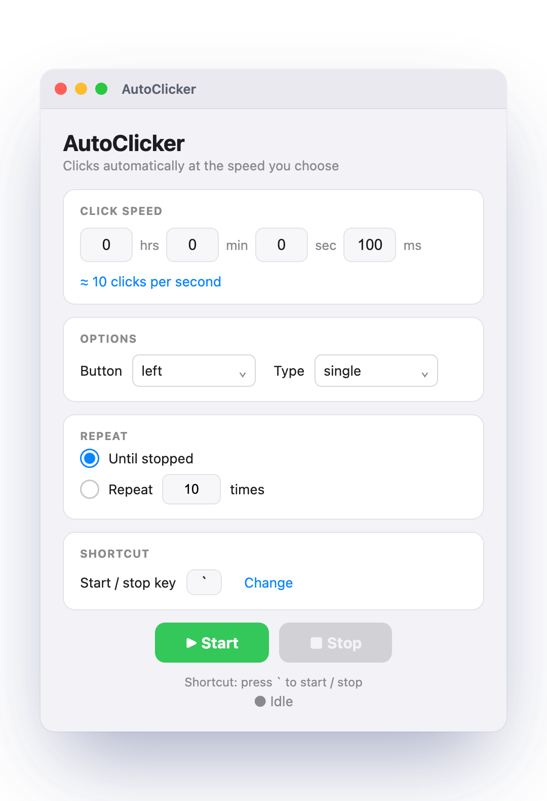

A free, lightweight auto clicker for macOS. Set your speed, pick a button, and click on autopilot.
⬇︎ Download for Mac
From many clicks per second to one every few minutes.
Left, middle, or right — single or double click.
Start or stop with a key of your choice — the backtick ` (above Tab) by default.
Download AutoClicker.dmg and open it.
Drag AutoClicker onto the Applications folder.
Open it — first time, right-click → Open → Open. (If macOS can't verify the developer, go to System Settings → Privacy & Security → Open Anyway.)
Enable it under System Settings → Privacy & Security → Accessibility so it can click, then quit and reopen.
Yes — it's completely free and open source.
Yes. It's open source — you can read all the code on GitHub. The one-time "unverified developer" prompt appears because the app isn't paid-registered with Apple, not because anything is wrong with it.
Yes — everything is adjustable:
` backtick key by default), from any appNo. This is a macOS app for Apple Silicon Macs (M1, M2, M3, M4). It does not run on Windows, Chromebooks, or older Intel Macs.